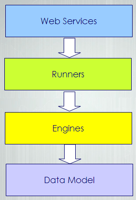

JABAWS Javadoc
Data model javadoc- read this if your are coding against JABA Web Services
Complete javadoc - for developers who want to use JABAWS framework and use Engines and Executables directly
Starting up from the source code
SVN source repository:https://svn.lifesci.dundee.ac.uk/svn/barton/ptroshin/JABA_r1
The repository contains a complete JABAWS Eclipse project. To use Eclipse with this repository you need to install Eclipse SVN plugin which could be found here: http://subclipse.tigris.org/servlets/ProjectProcess?pageID=p4wYuA. Eclipse update web site address is http://subclipse.tigris.org/update_1.4.x Take care to install 1.4.x version of the plugin, as SVN repository will not work with more recent clients. it would help to install TestNG plugin as well which could be downloaded from http://testng.org/doc/download.html. Please note however that no generated code is stored in the repository. That is to say that if you like to obtain client or server packages it is better to download them from the download section of this web site. Of cause If you want to make a modification to the source code you would need to generate distributives yourself. To do that first generate JAX-WS artifacts using build-server task from wsbuild.xml ant script, than you could use build.xml tasks to generate any of the distributives you need.
Structure of the project
Layers in the source code are defined in a different source folders which are:
/webservices
/runner
/engine
/datamodel
JABAWS project is split into 4 layers. From bottom-up the first layer consists from the value classes used by all other layers of the hierarchy, in particular web services. So, to be able to use JABAWS one needs to have these classes. At the same time classes on this layer does not have any dependencies on the layers above.
The second layer contains code for execution of the wrappers, which are the abstraction describing native executables. The code on this level code engine. JABAWS can execute tasks locally that is on the same machine as JVM and on the cluster. Thus currently code on this layer contain two engines. This layer depends on the layer underneath, the data model layer, but is completely independent from the code above.
The third layer consists of the wrappers for the native executables and classes to handle their configuration. It depends on the engines and the data model, but know nothing about the web services.
Finally, the upper layer contains the web services, that depend on all the layers below.
The layer isolation is archived though specially designed compilation task which is executed sequentially in several stages so that the first layer compiles before any other layers, second layer compiles after that and process continies before all the code is compiled. Any violation of the layer boundaries results in the compilation failure. Use Ant "Compile" or "Complile_with_debug" tasks to perform the staged compilation.
A client package contains only classes from data model layer and a simple web services client. Framework package is for anyone who want to use JABAWS framework for controlling native executables in local or cluster environments. Framework exclude the web services layer. Server package contains all the code.
Running tests
The test results for the JABAWS package offered for download can be found here: Test Results
JABAWS uses TestNG for testing. There is a TestNG plugin available for Eclipse which has functionality similar to JUnit. However, no plugins are necessary to run the test cases, as testng jar is supplied with JABAWS together with an ant tasks to run the test cases.
The best way to ensure that JABAWS framework is completely functional on your system is to run all test cases. Test cases tests all aspects of JABAWS functionality. Consequently, one need to have non windows operation system and support of the cluster to be able to run all tests. If your system does not support cluster, then you could run all test excluding those that depends on the cluster. Several testing groups are supported:
- All tests (Test)
- Cluster tests (Run_cluster_dependent_test)
- Cluster independent tests ()
- Windows only tests (All_cluster_independent_windows_only_tests)
- Performance and stability tests (Long_tests)
- Re-run failed tests (Rerun_failed_tests)
- Run custom test (CustomTest)
To run the tests you need to download all sources from repository. Once you have done that, enter into the command line mode, change directory to the project directory and type: ant -f build.xml <test group name>
. Make sure you have Apache Ant installed and path to ant executable is defined in your path environmental variable. Replace test group name with the one of the names given in the list above to run required group of tests e.g for running cluster only tests use the following command: ant -f build.xml Run_cluster_dependent_test If you work under Linux you could use a simple script from the root folder of repository called runtests.sh This script simply contains a collection of the test commands described above and paths to java home directory and an ant executable, which you can define once for your system and then reuse.
A handy feature of TestNG is its ability to re-run failed tests. Failed test ant file is stored in test-output/testng-failed.xml. and is used in the ant task called Rerun_failed_tests. So re-running failed tests requires no more work than running any other test group and could be accomplished with the command: ant -f build.xml Rerun_failed_tests CustomTest runs the test defined in the project root directory file called temp-testng-customsuite.xml. This file is generated by TestNG plugin every time you run the test from Eclipse. Thus an easy way to run a test in a different environment is to run it from Eclipse first and then from ant using a custom test procedure.
For cluster execution make sure that the property LD_LIBRARY_PATH defined in build.xml points to cluster engine LD libraries directory in your local system.
Preparing distributive's
There are a number of ant tasks aimed for preparing distributives for download. Currently a few types of JABAWS packages are offered
- Client only (contains classes required to access JABA Web Services)
- Platform specific JABAWS (windows and other)
- JABA Web Services without JAXWS libraries ( a the runtime dependency)
- JABAWS without binaries
- JABAWS without binaries and jax-ws
- JABAWS framework
- min-jaba-client
- jaba-windows, jaba-complete
- jaba-without-jaxws
- jaba-no-binaries
- jaba-no-jaxws-no-binaries
- full-jaba-client
The easiest way to build all distributives is to call build-all ant task. There are more tasks defined in build.xml than described here. They are mostly self explanatory.
If you made any changes to the data model and would like to generate a complete JABAWS distro make sure you have rebuilt jaxws artifact as described below.
Building web services artifacts
Server side artifacts should be rebuild whenever the data model, meta model or MSA interface were changed. To do that run build-server task from wsbuild.xml ant build file. WSDL files will be generated in webservices/compbio/ws/server/resource directory. It is not necessary to edit them if any of the JABAWS clients are used. However, if you would like to generate portable artifacts using wsimport based on the generated WSDL files then, <soap:address location="REPLACE_WITH_ACTUAL_URL"/>
must be replaced with an actual server URL including the web services context path. For example:
http://www.compbio.ac.uk:8080/ws
JABAWS are the standard JAX-WS web services, which are WS-I basic profile compatible.